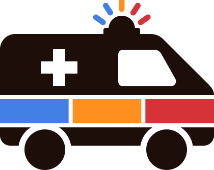

Vorschlag zu Block B/C (E-R45-1, E-S4-05 bis E-S4-11).
Anders als die Web-Mockups ist dies nicht an
Design.md gebunden — die App folgt den Android-Konventionen und
übernimmt aus der Marke Farben und Zurückhaltung. Schriften hier sind die der
Weboberfläche; auf dem Gerät sind es die Systemschriften.
Nicht eingerichtet
Koppel die App mit deinem Konto: Im Browser unter Einstellungen → Geräte einen Kopplungscode erzeugen.
1 — Erststart. Danach führt die App durch die Freistellung von der Akkuoptimierung (E-S4-05); der Zustand entspricht „Nicht eingerichtet" der Garmin-Sync-Seite.
Gekoppelt · einsatz.beispieldomain.de
Alles gesendet
Kein Dienst
Uhr: Galaxy Watch6 verbunden
2 — Bereit. Dienstbeginn geht auch von der Uhr aus (E-R45-13). Die Moduswahl merkt sich die letzte Entscheidung (E-S4-20); die Sync-Zeile kennt die drei Zustände aus Backlog Nr. 11.
Aufzeichnung läuft seit 07:02 · GPS an
Alles gesendet
Nur aufzeichnen
Die ganze Spur wird aufgezeichnet. Einsätze schneidest du später im Browser heraus — in der Tagesansicht am Ruhesegment.
3 — Nur aufzeichnen. Kein Knopf, den man mit Handschuhen versehentlich trifft. Der Wechsel zurück zu den Phasenknöpfen ist jederzeit möglich und verlustfrei (E-S4-20); die Uhr zeigt in diesem Modus nur Dienst beginnen/beenden.
Aufzeichnung läuft seit 07:02 · GPS an
Rückstand 2 Pakete
Einsatz · Phase 4 seit 10:26
4 — Im Einsatz. Die nächste Phase
ist der eine große Knopf; jede Zeile darunter setzt ihre Phase direkt
(Korrekturen erzeugen einen zweiten Eintrag, E-R45-12). „Einsatz
abschließen" fragt nach und sendet dann final + Endzeit
(E-S4-21b).
Logo

Uhr
5 — Einstellungen. Die Logo-Wahl wie im Web-Konto und an der Garmin (E-S4-22): Vorgabe „wechselnd", einmal je App-Start gewürfelt; fest auf RTH oder NEF umstellbar. Dazu die Uhr-Sperre (E-S4-21d) und das Trennen nach den Nr.-14-Regeln (rot: Aufmerksamkeit).
NAdoku
Handy verbunden Dienst beginnen löst am Handy aus6 — Uhr, vor dem Dienst. Die Uhr ist Fernbedienung: kein GPS, keine Zugangsdaten. Ohne erreichbares Handy zeigt sie „Handy nicht erreichbar" und puffert die Auslösung (E-S4-10).
7 — Uhr, im Einsatz. Der Durchlauf wie an der Garmin (E-S4-21b): ein Knopf, nächste Phase; nach Phase 9 wird derselbe Knopf zu „Einsatz abschließen". Zeitstempel entstehen auf der Uhr; bei Funkabriss steht hier „N gepuffert". Die kleine Bildmarke und der rote Aufnahmepunkt bleiben im Dienst sichtbar.
8 — Phasenliste. Übersicht und Direktwahl in einem (E-S4-21c): Zeiten ansehen, Tippen setzt die gewählte Phase (eine Korrektur wird zweiter Eintrag, E-R45-12). Unten in der Liste: „Einsatz abschließen" für den vorzeitigen Abschluss.
Einsatz
abschließen?
9 — Rückfrage. Erst die
Bestätigung — rot, hier gehört Aufmerksamkeit hin — sendet
final + Endzeit; ein versehentlicher
letzter Tipp beendet nichts (E-S4-21b).
10 — Gesperrt. Nach ~10 s ohne Bedienung sperrt die Anzeige (E-S4-21d): Phase und Zeit bleiben lesbar, Tippen tut nichts, Halten (~1 s) entsperrt — für Touch und eine etwaige freie Taste gleichermaßen.
WearableButtons-Schnittstelle, auf der Galaxy-Watch-Linie ist keine
zu erwarten (Home und Zurück sind systemgebunden). Wo eine gemeldet wird, legt
die App „nächste Phase" darauf — das Bedienbild kommt mit Touch allein aus
(E-S4-21a). Lünette und Krone scrollen nur, lösen nie aus.Geraete-Eingabe.md.
Die Handy-Bilder prüft der eine S24-Dienst des Auftraggebers.